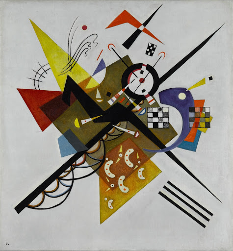

|  |
Autor:Kandinsky, Vassily
Título: Auf Weiss II (En blanco II)
Título origen: Legado de Nina Kandinsky, 1976
Tipo: Peinture
Técnica artística: óleo sobre lienzo
Fecha de creación: 1923
|
Descripcion
En Auf Weiss II (En blanco II), un lienzo del periodo de la Bauhaus que los Kandinsky tenían colgado en su comedor de Dessau, plasma la tensión entre dos líneas en diagonal que emanan de un fondo casi cuadrado: el blanco que da nombre a la obra.
El estilo de esta obra, con sus colores primarios, sus formas geométricas y el modo en que la composición flota ingrávida en un espacio aparentemente infinito, es comparable al suprematismo de Malévich, a quien Kandinsky conoció en Moscú. Podría ser una esquematización analítica de motivos asociados a Múnich, como la representación de San Jorge portando una lanza.
En Regards Vers le Passé (Mirada retrospectiva), Kandinsky afirma lo siguiente sobre el contenido de sus cuadros: "He aprendido a luchar con el lienzo, a concebirlo como un ser que se resiste a mi deseo (a mi sueño) y a obligarlo a plegarse a ese deseo con violencia".